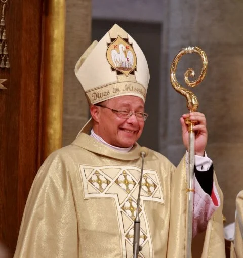
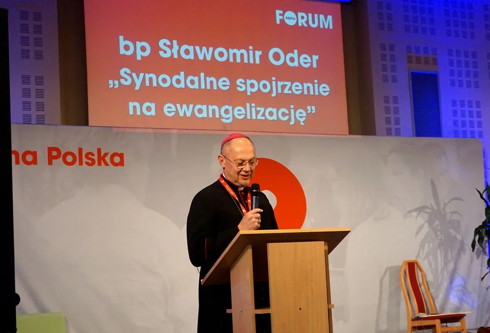
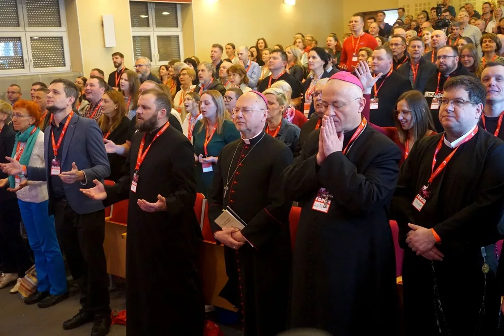
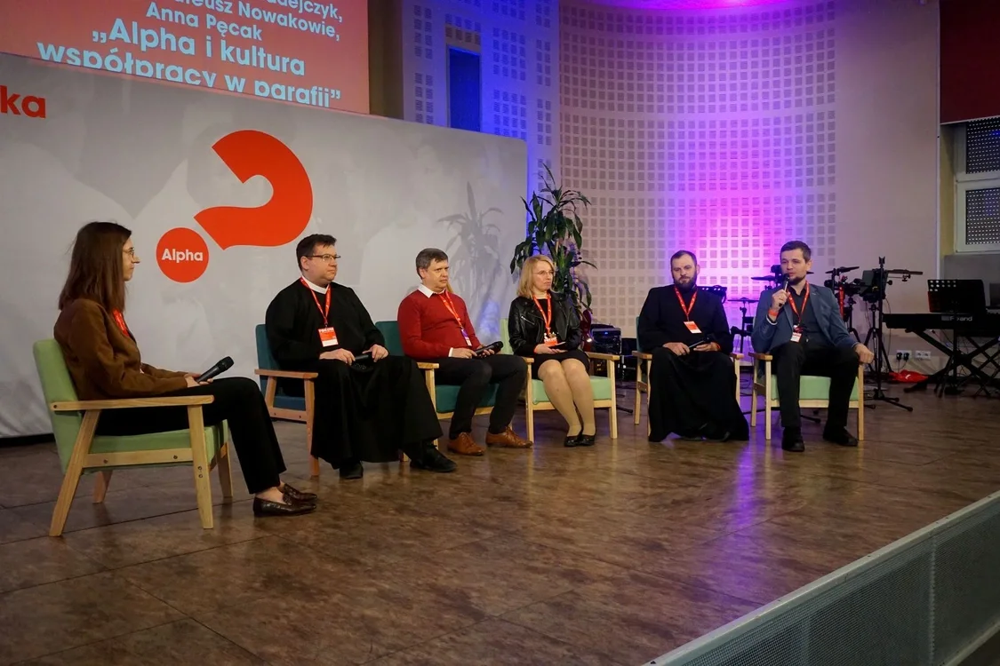

Gościnność
Parafia wychodzi z zaproszeniem do osób, które są daleko, szukają lub dopiero stawiają pytania.
Alpha w parafii
Alpha jest narzędziem ewangelizacyjnym, które może służyć parafii katolickiej: pomaga zapraszać, głosić Jezusa i budować relacje prowadzące do życia we wspólnocie Kościoła.
Poznaj DyrektoriumW praktyce
Alpha nie zastępuje liturgii, sakramentów ani zwyczajnego duszpasterstwa. Jest prostym narzędziem pierwszego głoszenia: przy wspólnym stole pomaga osobom poszukującym usłyszeć kerygmat, zadać pytania i zrobić pierwszy krok ku relacji z Jezusem.
Parafia wychodzi z zaproszeniem do osób, które są daleko, szukają lub dopiero stawiają pytania.
Treści Alpha prowadzą do rozmowy o Jezusie, wierze, modlitwie i działaniu Ducha Świętego.
Małe grupy pomagają budować zaufanie, przyjaźń i drogę dalszego wzrastania w parafii.

Alpha także dla wiejskich parafii
Widzimy, że Alpha jest bardzo przydatnym narzędziem, które działa w parafiach, nie tylko w parafiach w mieście, ale także w tych na wsiach. To bardzo ważne, ponieważ nie mamy wielu instrumentów ewangelizacji dla wiejskich parafii.
W naszej diecezji
To nie jest doświadczenie odległe od życia Kościoła lokalnego. Biskup, księża i świeccy spotkali się, żeby rozmawiać o ewangelizacji i uwalnianiu potencjału parafii.

22 marca 2025
Forum Alpha w Centrum Edukacyjnym im. św. Jana Pawła II w Gliwicach zgromadziło bp. Sławomira Odera, wielu księży oraz świeckich liderów. Rozmowy dotyczyły Alpha, „Bożej renowacji” i zmiany kultury parafii.
RCA Lubecko było częścią tego spotkania. Sławomir Paszko i ks. Tomasz Hajok dzielili się historią Alpha w Lubecku, a razem z uczestnikami i biskupami modliliśmy się o odnowę parafii.
Zobacz fotorelację w „Gościu Gliwickim”

Punkt odniesienia
Konferencja Episkopatu Polski przyjęła Dyrektorium Alpha w kontekście katolickim. Jest to wspólny dokument Zespołu ds. Nowej Ewangelizacji przy KEP oraz Stowarzyszenia Alpha Polska dotyczący prowadzenia Alpha w parafii katolickiej.
To właśnie ten dokument wyraża stanowisko KEP dotyczące prowadzenia Alpha w kontekście katolickim.
Otwórz Dyrektorium na Alpha PolskaWspólna odpowiedzialność
Alpha prowadzona jest przez świeckich liderów w imieniu parafii. Dlatego od początku ważna jest współpraca z proboszczem lub duszpasterzem: wspólna wizja, opieka duchowa i jasne zaproszenie uczestników do dalszego życia sakramentalnego oraz wspólnotowego.
Porozmawiajmy o Alpha w parafiiDo dalszej rozmowy
Te materiały mogą pomóc księdzu, liderom i ekipie zobaczyć Alpha w szerszym kontekście Kościoła, parafii i odnowy.
Alpha i doświadczenie Kościoła
Otwórz film na YouTube ↗
Alpha w parafii katolickiej
Otwórz film na YouTube ↗
Boża renowacja i ks. James Mallon
Otwórz film na YouTube ↗